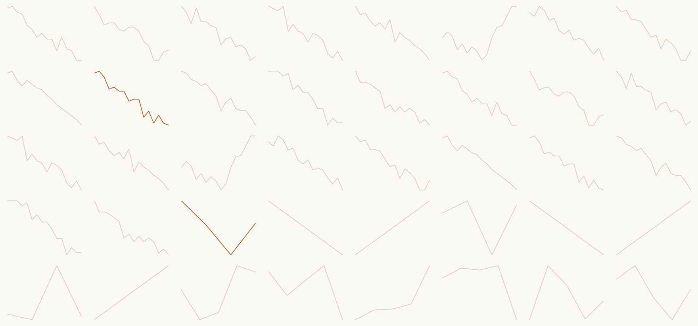

One finished product per day. Show the result first, then take it apart.
Press s for speaker notes, b for the chalkboard,
r for scroll view, o for an overview.
Exploratory versus explanatory. What a document is made of. Figures, tables, references.
One source, many formats. Parameters. Projects, identity and language.
Choosing the vehicle. Presentations. Dashboards.
Every block opens on one of these, working, before anything is explained. All of them render from the same data file.
Forty real cuts of the same data. Two of them go to the minister. Day 1 Block 1 opens here, before a word is spoken.
